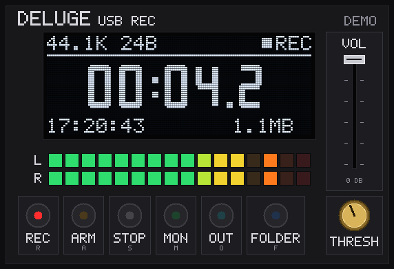
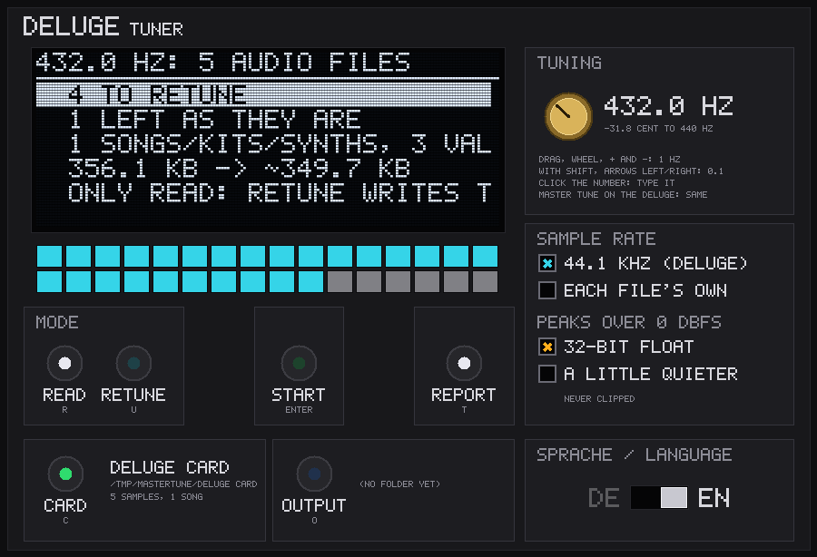
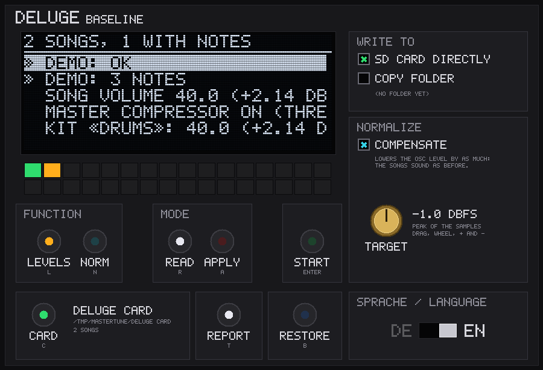

Drei kleine Windows-Programme nehmen den Deluge auf, stimmen eine Sample-Bibliothek um und gleichen die Pegel einer Karte aus. Zwei Browserseiten protokollieren den CPU-Monitor und den Profiler, und zwei Web-Apps erreichen die SD-Karte über USB.
| Werkzeug | Was es tut | Wo du es bekommst |
|---|---|---|
| DelugeRec | Nimmt das USB-Audio des Deluge auf, mit Mithören über Kopfhörer (§8.2). | Release deluge-rec (v7) |
| DelugeTuner | Stimmt die Sample-Bibliothek einer Karte einmalig auf den Master Tune um (§8.3). | Release deluge-tuner (v2) |
| DelugeBaseline | Prüft die Pegel aller Songs einer Karte und gleicht sie aus, mit Sicherung (§8.4). | Release deluge-baseline (v4) |
| CPU-Monitor-Seite | Protokolliert den CPU-Monitor live und als CSV (§8.5). | tools/cpu_monitor.html |
| Profiler | Zeigt die CPU-Zeit pro Spur, Task und Funktion (§8.6). | tools/profiler.html, tools/deluge_profiler.py |
| DEx, deluge-editor | Dateien und Presets auf der SD-Karte über USB (§8.7). | dex.silicak.es, cyface.github.io/deluge-editor |
.exe, ohne Installation. Die neueste Version liegt immer in ihrem Release unter github.com/Giansn/deluge/releases. Windows fragt einmal nach, weil sie nicht signiert sind: Klicke auf Weitere Informationen (More info), dann auf Trotzdem ausführen (Run anyway).mastertune-1.2.1/tools/.DelugeRec nimmt den Eingang «Deluge» von USB-Audio (Kapitel 4) bitgenau als 24-Bit-WAV-Datei auf. Unter Windows nutzt es den exklusiven WASAPI-Modus, und die Anzeige zeigt, ob wirklich 24 Bit ankommen. Es hört nur zu: Es sendet nichts an den Deluge.

| Element | Was es tut |
|---|---|
| REC | Startet die Aufnahme. |
| ARM | Startet, sobald das Signal eine Schwelle (THRESH) überschreitet, mit 0,3 s Vorlauf. |
| STOP | Beendet den Take. |
| MON | Das Mithören über Kopfhörer. |
| FOLDER | Öffnet den Ordner mit den Aufnahmen. |
| VOL | Lass ihn auf 0 dB: Dann ist die Aufnahme bitgenau. Herunterdrehen repariert kein Übersteuern, das schon im Deluge passiert. |
| Pads | Der Pegel. Für die Baseline in §5.8 sollte das Pad bei −3 dunkel bleiben. |
pip install sounddevice numpy, dann python tools/deluge_rec.py. Ohne Deluge: --demo.
Abseits von 440 Hz rechnet der Deluge jede Sample-Stimme um (§2.5). DelugeTuner wandelt die Sample-Bibliothek einer Karte einmalig auf den Master Tune um. Die umgewandelten Dateien tragen den mtun-Chunk (§2.3), so spielt der Deluge sie wieder direkt. Die Firmware braucht dafür keine Änderung.
RETUNE_REPORT.txt (auf Englisch).Vorher prüft es den freien Platz im Zielordner: etwa 5 % mehr als die Karte. ESC oder das Schliessen des Fensters hält an, sobald die laufenden Dateien fertig sind. START mit derselben Karte, demselben Zielordner und denselben Einstellungen macht dort weiter, wo es aufgehört hat.
Was es mit der Karte macht:
smpl und cue in den Dateien._ts, die nur die Tonhöhe verschiebt und die Länge behält. AIFF-Dateien werden zu WAV, weil der Deluge mtun nur in WAV liest.Was es bringt (Emulator, 432 Hz): Jede nicht transponierte Stimme spielt direkt. Pro Stimme und Block sinkt die Arbeit von 13 300 auf 2490 Befehle (mono) und von 19 800 auf 3000 (Audio-Clip). Die ganze Testkarte brauchte ohne Sample-Cache 34 % weniger, mit ihm 6 % weniger.
mtun richtig, kosten aber wieder Umrechnung._ts-Kopien können sich Anschläge um bis zu 4,6 ms verschieben.Kommandozeile: pip install numpy soxr pylibrb, dann python3 tools/retune_library.py --card CARD_COPY --out NEW_CARD (Standard 432 Hz, 44,1 kHz). --dry-run zeigt nur, --resume macht nach einer Unterbrechung weiter, --no-float macht Spitzen leiser, statt Float zu schreiben.

DelugeBaseline prüft alle Songs einer Karte gegen die Pegel-Baseline in §5.8 und kann sie darauf setzen. Es hat zwei Funktionen, jede im Modus LESEN (READ: zeigt nur) oder ANPASSEN (APPLY: zeigt und schreibt dann beim zweiten START):
| Funktion | Was ANPASSEN (APPLY) ändert |
|---|---|
| PEGEL (LEVELS) | Song-Lautstärke über 35 auf 35, Master-Kompressor aus. Kits und Audio-Spuren über 35 auf 35. Synths und Kit-Reihen so weit herunter, dass sie mit einem voll ausgesteuerten Sample höchstens wie 40 wirken. Automation behält ihre Form. Sättigung, die Kompressoren der Spuren, Analog-Delay und Filter bleiben: Das ist Klang, kein Pegel. |
| NORM | Hebt jedes Sample unter SAMPLES/, dessen Spitze unter dem Ziel liegt, bis zum Ziel an, nie darüber. Das Ziel stellt der Knopf ZIEL (TARGET) ein, Standard −1 dBFS. Nichts übersteuert; Format, Bittiefe und Chunks bleiben. Mit AUSGLEICHEN (COMPENSATE, standardmässig an) wird jeder Oszillator, der ein angehobenes Sample spielt, um genau so viel leiser gestellt, in jedem Song, Kit und Synth. So klingen die Songs wie vorher. Wavetables und Audio-Clips bleiben immer unberührt. |
BASELINE-BACKUP/, oder KOPIE-ORDNER (COPY FOLDER), mit nur den geänderten Dateien im Aufbau der Karte. ZURÜCK (RESTORE) spielt eine Sicherung zurück.Ohne Fenster: py tools/deluge_baseline.py [--lang en] check|levels|normalize E:\ [--yes]. Ohne --yes zeigt es nur, was es tun würde.
tools/cpu_monitor.html in Chrome oder Edge; die Datei ins Fenster zu ziehen genügt. Klicke auf Connect und erlaube MIDI mit SysEx.| Wert | Bedeutung |
|---|---|
| CPU mean | Rechenzeit der Audio-Routine geteilt durch die Dauer des erzeugten Audios. Dauernd über etwa 90 % wird es eng. |
| CPU peak | Der teuerste einzelne Durchlauf. Einzelne Spitzen über 100 % fängt der Ausgangspuffer auf (128 Samples, 2,9 ms). |
| Voices | Aktive Stimmen, jetzt und das Maximum. |
| Direness | 0–14. Über 0 hinkt die Audio-Routine dem Ausgang hinterher, und die Qualität wird gesenkt (QL). Der Anteil sagt, wie viel des Audios so entstand. |
| Culling | Stimmen pro Sekunde, die der CPU-Schutz wirklich ausblendet oder abschaltet (VC). Voice-Stealing wegen der Polyphonie zählt nicht. |
| SD card | Reine Lesezeit eines Sample-Clusters, Mittel und Maximum. Sie zeigt, wie schnell die Karte ist. |
| SD latency incl. audio | Dieselben Zugriffe von Anfang bis Ende, samt dem Audio, das derweil gerechnet wird: wie lange das Streaming auf einen Cluster wartet. Ist sie viel grösser als die Kartenzeit, bremst die CPU das Streaming, nicht die Karte. |
| Longest audio gap | Der längste Abstand zwischen zwei Durchläufen der Audio-Routine. Ab etwa 2,9 ms drohen Aussetzer. |
Mit Settings → CPU monitor → Profile zeigt der Deluge die gewohnte Zeile und sendet zusätzlich 1000-mal pro Sekunde, wo in seinem Code er gerade arbeitet, dazu die genaue CPU-Zeit jeder Spur. v16 Das kostet etwa 0,04 % CPU und etwa 8 KB/s auf USB-MIDI-Port 3; der Puffer lässt immer 1 KB frei, damit Noten und Clock nicht warten.
tools/profiler.html in Chrome oder Edge und klicke auf Connect..symbols.json neben der Firmware, die du installiert hast. Nur die passende Datei liefert die richtigen Funktionsnamen..jsonl-Datei.Während eine Spur rechnet, sind die Interrupts aus. Diese Zeit erscheint gesammelt als Song::renderAudio; welche Spur es war, steht unter «by track».
Ohne Browser macht tools/deluge_profiler.py dasselbe (pip install mido python-rtmidi; unter Windows mit Python 3.12). ports listet die drei Ports des Deluge, live gibt eine Zeile pro Sekunde aus, record -s 60 -o profile.jsonl nimmt auf, report profile.jsonl --symbols FILE wertet aus. Port 3 findet es selbst. Die Live-Zeile:
CPU 43.0 % (peak 71.0) voices 24 (max 30) QL 0 (0.0 % of the time) cut 0 gap 3.1 ms SD 11 loads, avg 1.7 max 9.0 ms
| Teil | Bedeutung |
|---|---|
| CPU | Last der Audiofenster: Mittel und Spitze der letzten Sekunde. Ab v17 ist das die echte Last; bis v16 zeigte ein untätiger Deluge 85–90 % aktives Warten. |
| voices | Klingende Stimmen, jetzt und das Maximum. |
| QL | Qualität gesenkt (quality lowered): die Direness (0–14) und für welchen Anteil der Zeit. |
| cut | Vom CPU-Schutz abgeschaltete Stimmen (voices cut). Die Zahl, die zählt. |
| gap | Die längste Pause zwischen zwei Läufen der Audio-Routine. Ab etwa 2,9 ms droht ein Aussetzer. |
| SD | Ladevorgänge von der Karte, mittlere und längste Dauer. |
Mit Profile zeigt live alle 5 s zusätzlich den Anteil der Audio-Routine, die teuersten Spuren und Tasks und, mit --symbols, Funktionen.
Die Karte bleibt im Deluge. Verbinde den Deluge per USB, öffne die Web-App in Chrome, Edge oder Opera und erlaube den MIDI-Zugriff. Die Apps finden den Dateizugriff selbst.
| App | Was geht |
|---|---|
DEx dex.silicak.es | Dateibrowser: Ordner ansehen, Dateien hoch- und herunterladen, umbenennen, kopieren, verschieben, löschen, Ordner anlegen. Wie bisher auch Spiegeln der Anzeige und Screenshots. |
deluge-editor cyface.github.io/deluge-editor | Synth- und Kit-Presets direkt von der Karte öffnen und wieder dorthin speichern. |
Der Dateizugriff geht nur über USB; an den DIN-Buchsen ignoriert der Deluge solche Anfragen. Sein USB-MIDI-Sendepuffer ist viermal so gross wie in 1.2.1, so passt auch eine volle Ordnerseite mit langen Namen hinein.